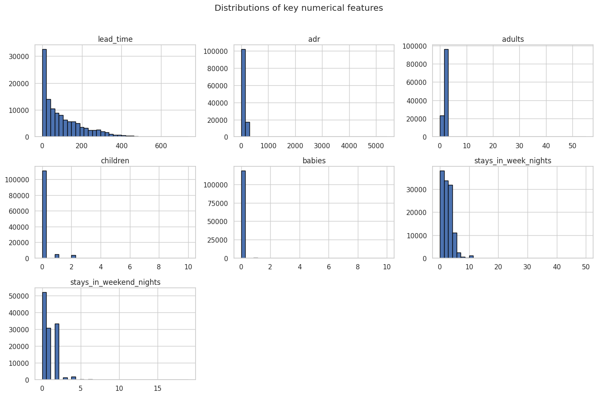

Company is missing in about 94% of rows and agent in about 14%; country is missing much less often, and only four children values are absent. Company should not be blindly imputed as an ordinary feature; decide whether its sparse coverage warrants dropping, a missing category, or another documented treatment.
Hotel Booking Demand
Exploring booking cancellations across hotel types, booking lead times, deposit policies, and arrival seasons.
Descriptive patterns from hotel booking records; group differences are associations, not causal effects.
View dataset ↗01 / DATASET OVERVIEW
Bookings, in context.
Hotel Booking Demand · Kaggle dataset by Jesse Mostipak.
The target is_canceled is 1 for a cancelled booking and 0 otherwise. Records cover City Hotel and Resort Hotel bookings. Exact deduplication leaves 87,396 rows; in that cleaned set, the cancellation share is 27.49%, so it differs from the original-data rate above.
Kaggle dataset ↗Dataset column guide (32 columns)
Each row represents a hotel booking. The guide below explains the fields in the source dataset; is_canceled is the prediction target. Reservation outcome fields at the end are known after the booking and should not be used as predictors for an advance cancellation prediction.
| Column | What it describes |
|---|---|
hotel | Hotel type: City Hotel or Resort Hotel. |
is_canceled | Target label: 1 if the booking was canceled, 0 otherwise. |
lead_time | Days between the booking date and the guest's arrival. |
arrival_date_year | Calendar year of the planned arrival. |
arrival_date_month | Month of the planned arrival. |
arrival_date_week_number | Week number of the planned arrival date. |
arrival_date_day_of_month | Day of the month of the planned arrival. |
stays_in_weekend_nights | Weekend nights (Saturday or Sunday) booked. |
stays_in_week_nights | Weekday nights (Monday to Friday) booked. |
adults | Number of adults in the booking. |
children | Number of children in the booking; four records are missing this value. |
babies | Number of babies in the booking. |
meal | Meal package booked; for example, BB (bed and breakfast) or SC (self-catering). |
country | Country of origin of the guest; missing for some bookings. |
market_segment | Market segment through which the booking was made, such as Direct, Groups, or Online TA. |
distribution_channel | Distribution channel that delivered the booking, such as Direct, Corporate, or TA/TO. |
is_repeated_guest | 1 if the guest has previously booked at the hotel, 0 otherwise. |
previous_cancellations | Earlier bookings by the guest that were canceled before this booking. |
previous_bookings_not_canceled | Earlier bookings by the guest that were not canceled. |
reserved_room_type | Room type code originally requested by the guest. |
assigned_room_type | Room type code ultimately assigned to the guest. |
booking_changes | Number of changes made to the booking from creation until arrival or cancellation. |
deposit_type | Deposit policy: No Deposit, Non Refund, or Refundable. |
agent | ID of the travel agent that made the booking, when applicable; often missing. |
company | ID of the company or entity responsible for the booking, when applicable; mostly missing. |
days_in_waiting_list | Days the booking spent on the waiting list before confirmation. |
customer_type | Booking type, such as Transient, Contract, Group, or Transient-Party. |
adr | Average daily rate for the booking (average revenue per occupied room per day). |
required_car_parking_spaces | Number of car parking spaces requested. |
total_of_special_requests | Number of special requests made by the guest. |
reservation_status | Final reservation outcome (Canceled, Check-Out, or No-Show); outcome-related leakage for advance prediction. |
reservation_status_date | Date the final reservation status was last set; outcome-related leakage for advance prediction. |
02 / EXPLORATORY DATA ANALYSIS
What the bookings show.
Open a section, then open an individual chart to see the plot and its interpretation.
Data quality and missing values
DATA QUALITY
Missingness is concentrated in identifiers
The notebook finds missing values in four columns and 31,994 fully duplicated rows.
| Feature | Missing | Rate |
|---|---|---|
| Company | 112,593 | 94.31% |
| Agent | 16,340 | 13.69% |
| Country | 488 | 0.41% |
| Children | 4 | <0.01% |
DUPLICATES
Deduplication changes the dataset materially
Removing 31,994 exact duplicate rows reduces the data from 119,390 to 87,396 records. The observed cancellation proportion shifts from 37.04% to 27.49%, so results must state clearly which version of the data they describe.
Missing-value rates by feature
Cancellation target and hotel type
TARGET DISTRIBUTION
Most original bookings were not cancelled
Counts and proportions before removing duplicate rows:
BY HOTEL TYPE
City Hotel has the higher observed cancellation rate
Rates use each hotel type's bookings as its denominator.
| Hotel | Bookings | Cancelled |
|---|---|---|
| City Hotel | 79,330 | 41.73% |
| Resort Hotel | 40,060 | 27.76% |
Original cancellation class counts
The 0 class is larger, but cancellations still make up more than one-third of the original data. When modeling, compare against a majority-class baseline and report class-specific recall and precision, not accuracy alone.
Cancellation rate by hotel type
City Hotel's observed cancellation rate is 41.73%, compared with 27.76% for Resort Hotel. This is a difference in this dataset, not evidence that hotel type itself causes cancellations; seasonality, booking channel, and other factors may contribute.
Numerical features and outliers
NUMERIC PROFILE
Lead time and stay lengths are right-skewed
Selected descriptive statistics from the original dataset:
| Feature | Median | Mean | Maximum |
|---|---|---|---|
| Lead time (days) | 69 | 104.01 | 737 |
| ADR | 94.58 | 101.83 | 5,400 |
| Week nights | 2 | 2.50 | 50 |
| Weekend nights | 1 | 0.93 | 19 |
| Adults | 2 | 1.86 | 55 |
ADR is the average daily rate recorded for a booking.
IQR SCREENING
Outlier flags are a review aid, not a delete rule
The notebook flags 3,005 lead-time values (2.52%) and 3,793 ADR values (3.18%) with the IQR rule. ADR reaches -6.38 and 5,400 in the raw data, so extreme or implausible values deserve validation; the rule alone cannot distinguish errors from unusual bookings.
Distributions of selected numerical features

Lead time and ADR have long right tails, while guest counts and night counts are concentrated at small values. Children and babies are zero for most bookings. Transformations or robust scaling may help some models, but should be chosen after checking model behavior.
Lead-time boxplot

The central range is much shorter than the longest lead times, producing a visible upper tail and IQR flags. Values as high as 737 days should be checked for validity, but long advance booking windows can be genuine.
Average daily rate (ADR) boxplot

Most ADR values sit in a relatively narrow range, with a long upper tail and an extreme maximum of 5,400. The raw minimum is negative (-6.38); inspect such records and document any correction or exclusion before modeling.
Cancellation by deposit policy and arrival month
DEPOSIT TYPE
Non-refundable bookings show very high cancellation
The notebook reports cancellation rate alongside group size:
| Deposit type | Bookings | Cancelled |
|---|---|---|
| Non Refund | 14,587 | 99.36% |
| No Deposit | 104,641 | 28.38% |
| Refundable | 162 | 22.22% |
OTHER GROUPS
Rates vary across customer and market segments
Transient customers have a 40.75% cancellation rate (89,613 bookings), versus 10.23% for Group customers (577 bookings). Groups market segment is 61.06% (19,811 bookings), while Direct is 15.34% (12,606 bookings). Group sizes differ, so rates should be read with counts.
Cancellation rate by deposit type
Non Refund bookings show a 99.36% cancellation rate in the saved notebook summary, compared with 28.38% for No Deposit and 22.22% for Refundable. The Refundable group contains only 162 bookings; investigate booking definitions and sample size before drawing broad conclusions.
Cancellation rate by arrival month
Monthly rates vary: the chart peaks around June and is lowest around November. This suggests seasonality in the observed bookings, but the plot combines years; it does not separate seasonal effects from changes between years or booking mix.
03 / DATA CLEANING & PREPROCESSING
Prepare the bookings for analysis.
Cleaning steps documented in the notebook, with explicit treatment for missing, duplicate, and invalid values.
Remove exact duplicate rows
The source has 119,390 rows. Removing 31,994 exact duplicates leaves 87,396 bookings. The cancellation share changes from 37.04% to 27.49%, so downstream results should identify which dataset version they use.
Handle missing data by meaning
company is dropped due to its high missing rate. Missing agent values are encoded as 0, missing country as “Unknown”, and missing children values are filled with the median. The post-cleaning summary reports no nulls.
Set types and prevent leakage
Column names are trimmed, agent is cast to an integer identifier, and is_canceled is validated as a binary integer target. reservation_status and reservation_status_date are excluded from predictors because they reveal the booking outcome.
Correct invalid ADR; review outliers
The notebook finds one negative ADR, replaces it with a missing value, then fills it with the median. IQR flags are used to inspect unusual values rather than delete them automatically; long lead times or high ADR can be valid bookings.
Preprocessing for modeling
Treat agent as a categorical identifier rather than a continuous quantity. Fit any remaining imputation inside a pipeline on training data only to avoid leaking information across the split.
04 / EDA AFTER PROCESSING
Recheck completeness, shape and validity.
The notebook repeats quality checks after cleaning and reviews the target distribution on the resulting data.
COMPLETENESS & TYPES
87,396 rows · 29 columns · no nulls
The cleaned table has 17 integer, 2 floating-point, and 10 object columns. The children and ADR fields are numeric; booking, customer, and outcome categories remain categorical where appropriate.
The notebook’s later duplicate check reports 266 duplicates, even though the immediate post-deduplication check reports zero. Verify this discrepancy after the cleaning and imputation steps.
CANCELLATION DISTRIBUTION
About one in four cleaned bookings was canceled
On the deduplicated dataset, 72.51% are not canceled and 27.49% are canceled. Account for this class imbalance when selecting model metrics and splitting data.
Proportions are from the saved notebook output: 0.725102 and 0.274898.
Feature summaries after cleaning
Descriptive statistics reported by the notebook for the cleaned 87,396-row dataset.
Numeric summary (19 columns)
| Feature | Mean | Std. | Min | Median | Max |
|---|---|---|---|---|---|
is_canceled | 0.27 | 0.45 | 0 | 0 | 1 |
lead_time | 79.89 | 86.05 | 0 | 49 | 737 |
arrival_date_year | 2016.21 | 0.69 | 2015 | 2016 | 2017 |
arrival_date_week_number | 26.84 | 13.67 | 1 | 27 | 53 |
arrival_date_day_of_month | 15.82 | 8.84 | 1 | 16 | 31 |
stays_in_weekend_nights | 1.01 | 1.03 | 0 | 1 | 19 |
stays_in_week_nights | 2.63 | 2.05 | 0 | 2 | 50 |
adults | 1.88 | 0.63 | 0 | 2 | 55 |
children | 0.14 | 0.46 | 0 | 0 | 10 |
babies | 0.01 | 0.11 | 0 | 0 | 10 |
is_repeated_guest | 0.04 | 0.19 | 0 | 0 | 1 |
previous_cancellations | 0.03 | 0.37 | 0 | 0 | 26 |
previous_bookings_not_canceled | 0.18 | 1.73 | 0 | 0 | 72 |
booking_changes | 0.27 | 0.73 | 0 | 0 | 21 |
agent | 81.00 | 109.95 | 0 | 9 | 535 |
days_in_waiting_list | 0.75 | 10.02 | 0 | 0 | 391 |
adr | 106.34 | 55.01 | 0 | 98.10 | 5,400 |
required_car_parking_spaces | 0.08 | 0.28 | 0 | 0 | 8 |
total_of_special_requests | 0.70 | 0.83 | 0 | 0 | 5 |
Categorical summary (10 columns)
| Feature | Count | Unique | Most frequent | Frequency |
|---|---|---|---|---|
hotel | 87,396 | 2 | City Hotel | 53,428 |
arrival_date_month | 87,396 | 12 | August | 11,257 |
meal | 87,396 | 5 | BB | 67,978 |
country | 87,396 | 178 | PRT | 27,453 |
market_segment | 87,396 | 8 | Online TA | 51,618 |
distribution_channel | 87,396 | 5 | TA/TO | 69,141 |
reserved_room_type | 87,396 | 10 | A | 56,552 |
assigned_room_type | 87,396 | 12 | A | 46,313 |
deposit_type | 87,396 | 3 | No Deposit | 86,251 |
customer_type | 87,396 | 4 | Transient | 71,986 |
Validity checks after cleaning
Negative children: 0 · Negative ADR: 0 · Invalid is_canceled values: 0. There are 12,193 zero-valued agents and 452 “Unknown” countries; these are encoded values, not missing entries.
Cancellation distribution after cleaning
Notebook output from the cleaned dataset (87,396 bookings).
View cleaned target distribution
After duplicate removal and data cleaning, 72.51% of bookings are not canceled and 27.49% are canceled. This distribution supports the class-balance summary above and provides the post-cleaning comparison to the original 37.04% cancellation rate.
05 / MODELING ASSESSMENT
Prepare carefully before modeling.
The supplied notebook covers EDA and feature preparation; it does not report fitted-model results.
Handle missing values deliberately
Company is absent for 94.31% of rows and agent for 13.69%. The notebook imports imputation tools, but final imputation decisions should be fitted on training data only. Evaluate whether company adds useful signal given its sparse coverage.
Guard against target leakage
Reservation status and reservation status date describe the outcome and are excluded from the predictor set in the notebook. Keep that exclusion; otherwise the model could learn information unavailable at the time a booking needs a prediction.
Check the deduplication effect
Exact duplicate removal drops 31,994 rows and changes the cancellation share from 37.04% to 27.49%. Confirm whether repeated rows are true duplicates or meaningful repeated booking records, and report results against a clearly defined dataset version.
No model metrics are available yet
Although model classes and metric functions are imported, the notebook ends after defining the cleaned feature matrix and target. Next, use a stratified holdout split, train a baseline and candidate models, then report precision, recall, F1, ROC-AUC, and a confusion matrix for cancellation.
Cancellation rates shown here are descriptive summaries from the original data unless explicitly labeled as post-deduplication. They do not establish causal effects.